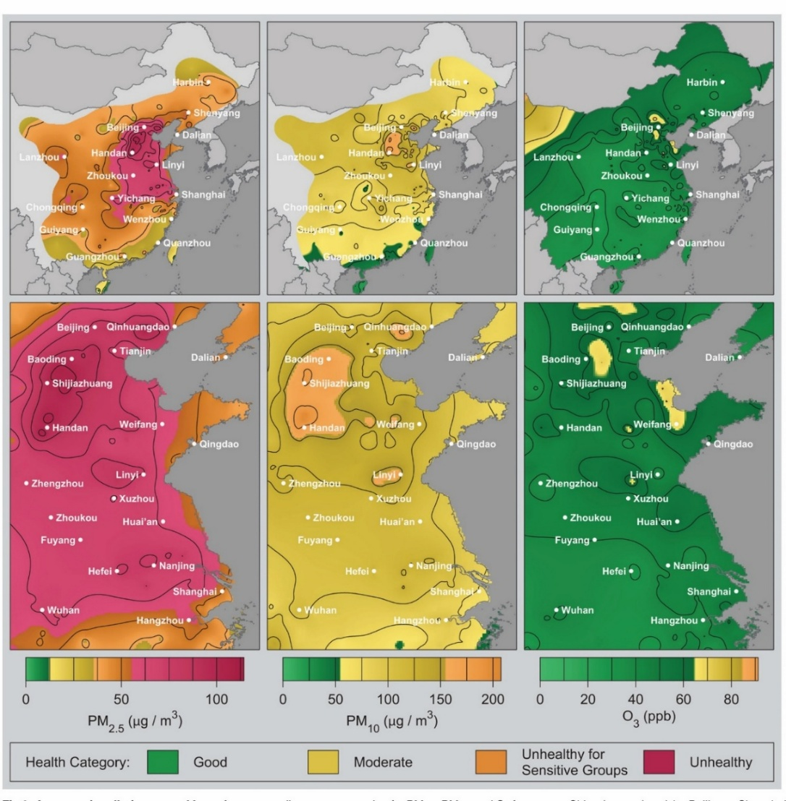
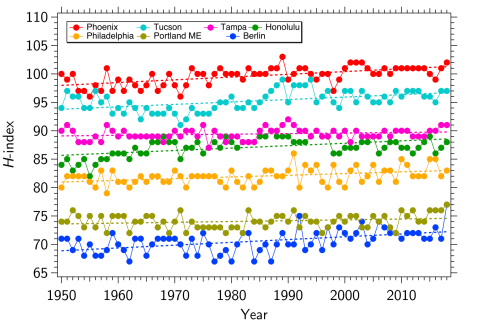
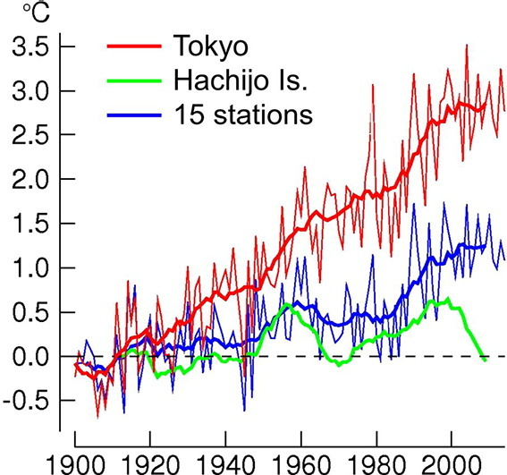

”Cities, like dreams, are made of desires and fears, even if the thread
of their discourse is secret, their rules are absurd, their perspectives
deceitful, and everything conceals something else.“
Italo Calvino, Invisible Cities
12. הסביבה העירונית#
המרחב העירוני[1] הינו אחת הסביבות על פני כדור הארץ שעברו את השינויים הקיצוניים ביותר עקב נוכחות ופעילות בני אדם, ועקב כך הוא משפיע בצורה ניכרת גם על האזור שסביבו. אפילו הערים שנחשבות ”ירוקות“[2] משפיעות בצורה משמעותית על סביבתן, ועל אחת כמה וכמה מרבית הערים שאינן ירוקות. השפעות אלה כוללות שינויי תכסית,[3] הפרעה למהלך הטבעי של מים, חומרים ובעלי חיים,[4] שינוי במאזן הקרינה, באופי הצומח ופליטה מוגברת של מזהמים. מצד שני, כל עוד חיים מיליארדי בני אדם על כדור הארץ, ערים הן חלק מפתרון הלחץ הסביבתי שיוצרים בני האדם,[5] במיוחד כאשר הן מתוכננות נכון.[6] מחקרים בתכנון עירוני מראים כי המדרך הסביבתי (בעיקר פליטות גזי חממה) של תושב עיר אינו גדול מזה של תושב פרברים או יישוב כפרי והוא עדיף מבחינת פגיעה בשטחים פתוחים.[7] השאלה העומדת לפתחנו בהקשר של הסביבה העירונית היא: מה ניתן לעשות כדי שאנשים יחיו בעיר בצורה הרמונית יותר, תוך מזעור פליטת מזהמים ורעש[8] והקטנת הנזק הנגרם לסביבה העירונית ולמרחבים שמסביבה? הפרק הנוכחי מפרט את היקף תופעת העיור והצפי לשנים הבאות (12.2-12.1). הוא סוקר את השימוש במתודולוגיות של מדעי הטבע בחקר הסביבה העירונית (12.3) ומצביע מהם המפגעים הסביבתיים אליהם נחשפים תושבי הערים, וכיצד משפיעות ערים על המרחבים שסביבן מבחינת זיהום אוויר (12.4), אקלים ושינויי אקלים (12.5), פסולת ומחזור (12.6), משאבי מים (12.7), הטבע העירוני (12.8) ובריאות הציבור (12.9). הפרק מסתיים בפרוט של מנגנוני ההתמודדות (12.10), תכנון ערים (12.11) ותוכניות להתמודדות בעתיד (12.12). ננסה להבין מהם הצעדים שניתן לנקוט אל מול המפגעים הסביבתיים, ומהן דרכי ההתמודדות בסביבה העירונית עם ההתחממות הגלובלית.[9] נראה גם כיצד התאגדויות של ערים ברחבי העולם (למשל C40)[10] מגבירות מודעות סביבתית ומייצרות לחץ פוליטי על מקבלי ההחלטות להסדיר רגולציה שמסייעת בהפחתת זיהומים ופליטות. יש דוגמאות רבות כיצד יוזמות נכונות של ערים ברחבי העולם כבר שיפרו את תחושת השייכות, הקהילתיות, וההרמוניה עם הסביבה בקרב תושביהן (למשל, קופנהגן, אוטרכט, פרייבורג, ועוד).[11]
כמה אנשים חיים בערים ומה השטח שהן תופסות?#
בשל שינויים במגמות התעסוקה והכלכלה מאז המהפכה התעשייתית התגבר תהליך העיור ואנשים עברו במספרים הולכים וגדלים מהסביבה הכפרית אל הסביבה העירונית. חלקם המכריע נאלצו לעזוב את בתיהם בחיפוש אחר תעסוקה ועקב מלחמות או נזקי טבע. לכן, מספר הערים גדל ויישובים כפריים הפכו לערים, ערים קיימות גדלו ולעיתים תכופות מספר ערים יצרו רצף עירוני (megalopolis).[12] כיום, ערים מאכלסות כ-56% מאוכלוסיית העולם, כלומר, כ-4.4 מיליארד אנשים חיים בערים, אולם יש פער גדול בין ארצות עניות (35% חיים בערים) לעומת ארצות עשירות (81% חיים בערים).[13] בישראל אחוז הגרים בערים גבוה אף יותר (ראו פרק 14). נכון לשנת 2023 ישנן 45 ערים עם יותר מ-10 מיליון תושבים, המוגדרות מגה-ערים (megacities), ויש 627 ערים עם יותר ממיליון תושבים. הערים הללו מאכלסות קצת יותר מ-2.3 מיליארד בני אדם כלומר, מעל ל-2 מיליארד בני אדם חיים בערים שיש בהן פחות ממיליון תושבים.[14] הערים הגדולות והמגה-ערים גדלות בקצב מהיר יותר הן מבחינת גודלן והן מבחינת מספרן: ב-1970 היו שמונה מגה-ערים לעומת 32 מגה-ערים ב-2015 ו-45 ב-2023.
בספרות המקצועית מתקיים דיון ער לגבי השטח שתופסות הערים מכלל שטח היבשות, ללא אנטארקטיקה. ההערכה היא שערים מכסות שטח של כ-1% משטח היבשות, כלומר כ-1.5 מיליון קמ“ר.[15] אולם, מפרספקטיבה סביבתית, גיאוגרפית ועירונית, נהוג להגדיר את המרחב העירוני (urban area) לפי כל השטח המושפע בצורה ישירה מקיום העיר, בעיקר בהיבטים של פגיעה באקוסיסטמות טבעיות, פליטת מזהמים ונוכחות ניכרת של בני אדם. שטח זה גדול בצורה משמעותית משטח הערים שצוין קודם, אולם קשה לאמוד בצורה חד משמעית את גודלו המדויק. הגידול העירוני בעשורים האחרונים היה מלווה בשינויים מרחיקי לכת בתשתיות וכתוצאה מכך בתכונות הפיזיקליות (חדירות למי גשמים, משטר הרוחות, מאזן הקרינה, קיבול החום) של הקרקע בשטחים שהתווספו לערים הגדלות והמתפתחות. מדובר בשינוי בשלושה ממדים – הן בשטח והן בגובה עם העלייה הניכרת במספרם ובנפיצותם של גורדי שחקים באלפי ערים ברחבי העולם.[16]
אתגרים ומגמות בהתפתחות ערים#
התחזית של האו“ם היא שערים ימשיכו לצמוח ולגדול וכי ב-2050 כ-70% מאוכלוסיית העולם (כ-7 מיליארד אנשים) יגורו בערים.[17] קצב הגידול השכיח של האוכלוסייה במגה-ערים הוא כ-2%, כלומר בקצב הזה (שלא בטוח שישמר) הן יכפילו את גודלן מידי 35 שנה וחלקן היחסי יגדל. מעל 80% מהכלכלה העולמית (כ-GDP) מקורה בערים, ולכן עיקר המאמצים של הפיכת הכלכלה למקיימת (sustainable economics) מתמקדת בזירה העירונית.[18] חלק ניכר של הערים נמצא באזורים העלולים להיפגע בצורה חמורה מנזקי מזג אוויר כגון שיטפונות וגלי חום. כמו כן, אזורים עירוניים רבים נמצאים בשטחים העלולים להיות מוצפים עקב עליית מפלס הים, מה שמסכן כשני מיליארד בני אדם, רובם בארצות מתפתחות. מבחינת מגיפות, נראה שהמרקם החברתי, יותר מאשר צפיפות הערים קובעים עד כמה הן מועדות להתפרצות מגיפות (כפי שקרה בזמן התפרצות COVID-19).[19] גם בהיבט הזה, העניים, החיים בשכונות צפופות ועם מפגעים תברואתיים רבים יותר יותר חשופים לפגיעות מסוג זה (ראו פרקים 9 ו-11). האתגר הגדול ביותר מבחינה תכנונית וסביבתית הוא קצב הגידול המהיר של ערים היוצר מתח בין צרכים שונים: פיתוח תשתיות ומתן שירותים לכלל תושבי העיר ומציאת משאבים לכך, תוך שמירה על חוסן העיר (resilience),[20] על שטחים פתוחים ועל תמהיל חברתי מגוון. האתגר הוא יצירת סביבה חברתית הכוללת מגוון רחב של קבוצות אוכלוסייה שונות, שבהן יש הבדלים בדת, מגדר, גיל, מוצא אתני, רמת הכנסה ועוד.[21]
רק אם נעמוד באתגר הגדול שבו ערים גדלות בקצב מהיר אבל בצורה נכונה מבחינה סביבתית, נוכל להפחית במידה משמעותית את הפגיעה באיכות החיים של מיליארדי בני אדם בעולם צפוף, מתועש ומתחמם. על מנת לעשות זאת, כצעד ראשון עלינו להבין את הדינמיקה של גידול ערים. מחקרים רבים הסתמכו על המשוואה האמפירית של זיפ (Zipf’s law)[22] על מנת לדרג ערים על פי גודלן. אולם, לאחרונה התפרסם מאמר שביקר את הגישה התיאורית הזאת וטען שחייבים להבין את הכוחות המשפיעים על קצב הגידול של ערים ובעיקר את תרומתם של אירועים נדירים אך קטסטרופליים (למשל, גלי הגירה והתמוטטות של תרבויות),[23] כדי לנבא את קצב הגידול שלהן. רק אז נוכל להיערך ולתכנן בצורה מיטבית את התשתיות הנדרשות על מנת לעמוד בקצב הגידול הצפוי. מחקרים נוספים התמקדו גם בתנועה של תיירים ומבקרים והראו כיצד ניתן לנבא את כמות המבקרים בעיר מסוימת ולהתכונן בהתאם מבחינת התאמת תשתיות, בין היתר על מנת למזער נזקים סביבתיים.[24]
חקר הסביבה העירונית באמצעות מתודולוגיות של מדעי הטבע#
בגלל עוצמת ההשפעה של הסביבה העירונית על תנאי החיים בכדור הארץ, נערכו בשנים האחרונות מחקרים רבים במגוון דיסציפלינות מדעיות שהתמקדו בסביבה העירונית. דוגמא אחת מיני רבות היא גאוכימיה עירונית. באופן כללי גאוכימיה עוסקת במחזור החומרים הטבעיים בטבע ובמנגנונים המשפיעים על יכולתם לנדוד מסביבה אחת לשנייה ועל זמינותם לביוטה. דוגמה בולטת היא מחזור הפחמן והצטברות פד“ח באטמוספרה, כפי שראינו בפרק 5. לפני כעשור הוקדש גיליון של עיתון החברה העולמית לגאוכימיה לנושא ”גאוכימיה עירונית“ (Urban Geochemistry).[25] גאוכימיה עירונית עוסקת בפיזור חומרים ומינרלים בערים ובהשפעתם על יציבות המערכת האקולוגית העולמית והמקומית ועל בריאות בני האדם בערים עצמן ובאתרים מרוחקים מהן. בין היתר מדובר בפיזור של מתכות רעילות, תרכובות אורגניות רעילות ונוטריינטים שמקורם בפעילות בני אדם. ההשפעה נובעת הן מריכוזם הגדול של בני אדם בסביבה העירונית והן מהתשתית העירונית הענקית, המשבשת את זרימת המים בפני השטח ובתת הקרקע, את משטר הרוחות האזוריות ואת תנועת בעלי חיים, ופוגעת בצמחיה טבעית. אחד הנושאים אותם חוקרת גאוכימיה עירונית הם זיהומי עבר (legacy pollution) והשפעותיהם ארוכות הטווח.[26] דוגמא בולטת לזיהומי עבר היא העופרת שבמשך כמעט 100 שנה נפלטה לאטמוספרה כתוסף דלק ונמצאת כיום בקרקעות בצידי דרכים ובחצרות בתים (ראו פרק 5).[27] נושא נוסף, עליו נרחיב בהמשך, הוא השפעת העיור על תנועת מים וחומרים מומסים במים או מרחפים בהם. החשיפה המוגברת לחומרים מסוכנים כגון תרכובות אורגניות רעילות או מתכות רעילות גורמת לפגיעה בבריאות, בעיקר בקרב אנשים החיים ברבעים צפופים ובבתים בהם אין מערכות טיהור אוויר. ההערכות הן שלמעלה ממחצית המגה-ערים סובלות מזיהום אוויר קשה הפוגע בצורה חמורה בבריאות בני האדם הגרים בהן. לערים יש כמובן תרומה מכרעת לפליטות מזהמי אוויר וגזי חממה, כשהערכות הן שכ-80% מפליטות פד“ח לאטמוספרה וכ-70% מכלל גזי חממה מקורן בסביבה העירונית ובמפעלי התעשייה הנמצאים בה. זאת בזמן שערים אחראיות, כאמור, על יותר מ-80% מהתמ“ג (GDP) העולמי. לאחרונה התברר שדליפות גז מתאן, ככל הנראה מצנרת אספקת המתאן העירונית, משמעותיות יותר ממה שהעריכו קודם,[28] והן מחריפות את הבעיה העולמית של פליטות גזי חממה. יתרה מזאת, מחקר שנעשה בניו יורק הראה שפליטות של כלור-פלואור-פחמנים (halocarbons)[29] מהמרכז העירוני הן באותו סדר גודל של פליטות המתאן ואף עולות עליהן.[30]
זיהום אוויר בסביבה העירונית#
זיהום אוויר בערים איננו תופעה עכשווית. ישנו תיעוד של זיהום אוויר מתמשך בערים, למשל בעזרת מדידות של ריכוזים ויחסים איזוטופים של עופרת על פטינה המצטברת על בניינים.[31] מקורות זיהום האוויר בערים כוללים פליטות מתחבורה (המפלט, שחיקת צמיגים[32] ושחיקת מעצורים),[33] תעשיה ומסחר, הרחפה של אבק ששקע על פני השטח[34] והגעה של מזהמים מרחוק.[35] תנועת האוויר במרחב העירוני (urban canyon phenomena) והשפעתה על תנועת מזהמים נחקרה באופן אינטנסיבי בעשורים האחרונים.[36]
לזיהום האוויר בערים, ובעיקר מגה-ערים, יש השפעה גם על איכות האוויר באזורים הנמצאים מסביבן. עשרות מחקרים ודוחות תעדו את התופעה של זיהום אוויר במורד הרוח ממרכזים עירוניים ואת השילוב של זיהום ופליטות גזי חממה. אחת ממסקנות המחקרים היא שיש צורך לכרוך את המאבק בפליטת גזי חממה עם המאבק להפחתת זיהום אוויר ולקדם שיתוף פעולה בין-מדינתי ואזורי על מנת להשיג יעדים אלה.[37] מידי פעם מתבררת רמת הזיהום של ערים חדשות, שעד כה לא נבדקו בצורה סיסטמתית. לדוגמא, בתחילת שנות האלפיים תועדה ההשפעה של זיהום אוויר שמקורו בקהיר על איכות אוויר בישראל ונמצא שבעונות המעבר (אביב וסתיו) מרבית זיהום האוויר החלקיקי (PM) במרכז ישראל מגיע מקהיר.[38] לאחרונה נמצא שמספר ערים במרכז אסיה מהוות מקור אזורי לזיהום אוויר חלקיקי (\(PM_{2.5}\)) חמור.[39] בשנת 2019 דלהי (הודו) היתה הטוענת לתואר המפוקפק ”העיר עם האוויר המזוהם ביותר“. גם בדלהי, כמו בערים אחרות, יש פער גדול בחשיפה לזיהום אוויר בהתאם למעמד הסוציו-אקונומי.[40]
תיעוד זיהום האוויר העירוני ומגמות עכשוויות#
במהלך השנים נעשו מאמצים רבים לתעד ולהעריך את מידת זיהום האוויר של מגה-ערים. למשל, ב-2008 התפרסם מאמר שדירג את המגה-ערים על פי כמות פליטת גזים וחלקיקים לנפש, בעיקר על סמך מדד זהום אוויר כללי (MPI – multi-pollutant index) הלוקח בחשבון גופרית דו חמצנית (\(SO_2\)), תחמוצת חנקן (\(NO_2\)) וכלל החלקיקים המרחפים (TSP – total suspended particles), ובמקביל התבצעה הערכה של שטחן ושל צפיפותן. מדידה זו אפשרה גם לדרג את זיהום האוויר לפי מספר נתון של תושבים (למשל זיהום למיליון תושבים) או ליחידת שטח, תהליך הנקרא נרמול של הזיהום לפי מספר תושבים או לפי שטח העיר.[41] נמצא שהערים דאקה, קהיר, קראצ’י ובייג’ינג (Dhaka, Beijing, Cairo, and Karachi) הן המזוהמות ביותר, וצריכות לנקוט בפעולות נרחבות על מנת להפחית את זיהום האוויר. דירוג דומה התפרסם שנה לאחר מכן.[42] גם באירופה נמצא שמגה-ערים גורמות לזיהום אוויר עד למרחק ניכר מהן. דוגמא לכך היא פריז שמשפיעה על סביבותיה הן בחורף והן בקיץ, כפי שהדבר מתבטא בהיווצרות פלומת אוויר בה יש עלייה משמעותית בריכוז תרכובות אורגניות הספוחות לחלקיקים מרחפים (PM), פיח, תחמוצות חנקן (NOx) ופד“ח.[43] השפעת מגה-ערים על סביבותיהן מתבטאת גם ביצירת פלומות אוויר עכורות (עם AOD נמוך, AOD = aerosol optical depth, ראו פרק 11).[44] לעכירות הזאת יש גם השפעה על מידת ההתחממות של העיר בהשוואה לסביבותיה (urban heat island),[45] נושא עליו נרחיב בהמשך הפרק. יש הבדל ניכר בין רמות העכירות האטמוספרית שגורמות מגה-ערים בהודו, סין ובמזרח התיכון לעומת אירופה וצפון אמריקה, מה שמשקף את השיפור שחל באיכות האוויר בחלק מערי העולם בעשורים האחרונים.[46] למרות מגמת השיפור הקיימת באוויר של ערים בצפון אמריקה ובמערב אירופה, דווח לאחרונה על האטה מסוימת במגמה זו, בעיקר לגבי תחמוצות חנקן ו-CO בערים בארצות הברית,[47] דבר העלול לגרום גם להאטה בשיפור שחל בריכוזי אוזון טרופוספרי. למשל, בניו יורק תועדה לאחרונה האטה מסוימת בירידה בריכוזי PM, ובמקביל אף תועדה עלייה מסוימת בריכוזי אוזון בעיר עצמה, אם כי באזורים כפריים ריכוזי אוזון ממשיכים לרדת.[48] מחקרים רבים הראו גם כי שכונות עירוניות של לבנים בארצות הברית נחשפות פחות לסוגים שונים של מזהמי אוויר בהשוואה לשכונות של היספנים או שחורים בגלל ריחוקן היחסי ממקורות הזיהום (כבישים ראשיים, מפעלי תעשייה, ועוד).[49] מצב זה מחריף כאשר הסטנדרטים הסביבתיים נעשים מחמירים יותר, כמו שקרה עם \(PM_{2.5}\) בשנת 2024.[50]
מקורות זיהום אוויר ודרכי ההתמודדות#
צירי התנועה בעיר הם מקור מרכזי של זיהום אוויר המגיע מן המפלטים, הצמיגים ומעצורי המכוניות, וכן מהתרוממות אבק מזוהם מפני הכביש. כל אלה יוצרים תערובת של מזהמים עם מאפיינים מגוונים מבחינת הרכב הגזים המזהמים (NOx, CO, SOx, VOC) והתפלגות החלקיקים המרחפים.[51] במסגרת ההתמודדות עם זיהום אוויר עירוני ופליטות גזי חממה מרכב מנועי, ישנה מגמה עולמית של מעבר לרכב יעיל יותר, רכב היברידי, ולאחרונה גם לרכב חשמלי. על הבעייתיות של רכב חשמלי דנו בפרקים קודמים (ראו פרקים 4 ו-5). בהקשר העירוני ראוי לציין שמחקר שנעשה בישראל מצא כי בעלות של רכב חסכוני גורמת לעלייה בנסועה (משום שהעלות לקילומטר נמוכה יותר), מה שפוגע בירידה המיוחלת בזיהום אוויר ולמעשה אף עלול להגביר את זיהום האוויר. במקביל נגרמת הכבדה על התנועה בעורקי התחבורה העירוניים והבין-עירוניים, יותר כלי רכב נעים בכבישים, הפקקים מתארכים ונעשים תכופים יותר.[52] כלומר, הפתרון הרצוי הוא מעבר משימוש ברכב פרטי לשימוש בתחבורה ציבורית, אם כי חשוב לזכור כי קיים מנעד גבוה באחוזי המשתמשים בתחבורה ציבורית בתרבויות שונות. למשל, בדרום קוריאה נהוג יותר לנסוע בתחבורה ציבורית, לעומת ארה“ב בה השימוש סקטוריאלי יותר ונפוץ פחות.[53] בערים קיים גם זיהום אור משמעותי, ולאחרונה תועדו השפעות של התופעה הזו על בעלי חיים ועל בני אדם.[54] בנוסף, זיהום אור עירוני גורם לפגיעה ניכרת ביכולת לצפות בכוכבים, תופעה ההולכת ומחמירה עם השנים עקב השימוש הגובר בתאורת LED החסכונית מבחינה אנרגטית,[55] ומביאה לכך שתושבי ערים מפסידים את אחד המראות מרחיבי הדעת ביותר – שמי לילה זרועי כוכבים.
התמודדות עם זיהום אוויר עירוני מחייבת בשלב ראשון ניטור מרחבי ועיתי צפוף (high-resolution temporal sampling)[56] הן בעיר והן באתרי רקע הנמצאים במרחק ממרכז העיר, במורד הרוח[57] וכן ניטור של הולכי רגל.[58] בערים בהן נעשו מאמצים כאלה, יש דיווחים על הצלחות בהפחתת זיהום אוויר כמו למשל בסין, וכפי שציינו בפרק 11 גם בלונדון. אולם, לעיתים התמונה מורכבת יותר. מסתבר שהורדת הפליטות של גופרית דו חמצנית (\(SO_2\)) ללא הפחתה במקביל בפליטות פיח (BC) איננה מספיקה כדי להוריד את שכיחותם ועוצמתם של אירועי ערפיח הגורמים לנזק בריאותי ואף עלול לגרום להתחממות מקומית.[59] דוגמא בולטת למורכבות של זיהום האוויר העירוני והגורמים לו מוצגת באיור 12.1.[60] באיור רואים את ממוצע הריכוזים של חלקיקים מרחפים (\(PM_{2.5}\), \(PM_{10}\)) ושל אוזון בסין במשך ארבעה חודשים בשנת 2014. שימו לב לכך שהאזור המזוהם ביותר באיור 12.1 הוא צפון מזרח סין – אזור בייג’ינג בה חיים כ-20 מיליון אנשים, ואילו בקנטון (Guangzhou) העיר הגדולה ביותר בעולם עם כ-68 מיליון תושבים רמות זיהום האוויר נמוכות יותר. כפי שמצביעים מחברי המאמר הסיבות לכך מגוונות. בין הגורמים לפער בזיהום ראוי לציין את ריבוי מקורות הפליטה השונים, בעיקר תעשייה ותחנות כוח פחמיות, וכן זיהום תחבורתי באזור בייג’ינג לצד תנאי פיזור, ערבוב ושטיפה באמצעות גשם הפועלים ביתר יעילות בקנטון.
בגלל מורכבות המרחב העירוני וההטרוגניות הגדולה שלו יש לפרוס רשת צפופה של תחנות ניטור ולשלב תחנות נייחות וניידות (ראו גם פרק 11). למשל, יש מחקרים שהשוו את זיהום האוויר העירוני במפלס הרחוב עם זיהום אוויר כמה קומות גבוה יותר, ומצאו שלעיתים יש ירידה בזיהום עם הגובה, אולם המסקנות אינן חד משמעיות.[61] ישנם גם מחקרים המדגישים את הצורך בדיגום צפוף במרחב על מנת להתמודד עם השונות הגדולה הנובעת מיעילות משתנה של סילוק מזהמי אוויר, כמו למשל נוכחות עצים.[62] במסגרת המאמצים להפחית עומס תחבורתי וזיהום אוויר במרכזי ערים, בחלק מערי העולם מוגדרים אזורים בהם מוגבלת כניסת רכב ממונע. לאחרונה דווח שבחלק ניכר מהאזורים הללו יש ירידה ניכרת במחלות הנובעות מזיהום אוויר, בעיקר מחלות לב וכלי דם (cardiovascular).[63] למרות שכלי רכב תורמים משמעותית לזיהום אוויר בעיר, יש תיעוד לכך שהם תורמים רק כשליש מריכוזי ה-PM, בעוד שתעשייה, שריפת ביו-דלקים, קרקעות עירוניות מזוהמות שהופרחו לאוויר,[64] תחבורה ימית, מלח ים ואבק מדברי תורמים את השאר.[65] ברור לגמרי שהתרומה היחסית של המקורות הללו משתנה בהתאם למאפייני העיר, קרבתה למדבר או לים ועוד. גם ברור שיש לאפיין את מקורות הזיהום ואת תרומתם היחסית בכל עיר בנפרד על מנת להפחית בצורה יעילה את רמות הזיהום.[66]
{kind=link}

Fig. 113 איור 12.1: זיהום אוויר חלקיקי (PM2.5, PM10) ואוזון בסין Eastern China - top row, and the Beijing to Shanghai corridor - bottom row.#
מקור – Eastern China - top row, and the Beijing to Shanghai corridor - bottom row. מקור –
Rohde and Muller (2015) https://journals.plos.org/plosone/article?id=10.1371/journal.pone.0135749 ; Creative Commons Attribution License. Reprinted with permission. See also https://berkeleyearth.org/wp-content/uploads/2015/08/China-Air-Quality-Paper-July-2015.pdf
אקלים המרחב העירוני#
השפעת שינויי אקלים על המרחב העירוני#
התחממות גלובלית היא נושא רחב שמשפיע על איכות חייהם של מיליארדי בני אדם,[67] ואף יכול להשפיע על בריאותן של אוכלוסיות מוחלשות, ילדים וזקנים בעיקר במדינות מתפתחות בהן מיזוג אוויר איננו בהישג ידם של מרבית התושבים.[68] לצורך הערכת עומס החום העירוני פותחו מספר מדדים ואנו נסקור חלק מהם. למשל, לפני מספר שנים הוצע להתייחס למספר הימים בשנה שבהם הטמפרטורה בעיר עלתה מעל סף מסוים המוגדר כ-H (איור 12.2).[69] לפי מדד זה, לעיר פניקס, העיר החמה ביותר בארצות הברית, יש H=102, כלומר היו בעיר 102 ימים בשנה בהם הטמפרטורה עלתה על 102 מעלות פרנהייט (39 מעלות צלזיוס). בהקשר זה מעניין לציין את יולי 2023 שבו הטמפרטורה בפניקס הייתה מעל 110 מעלות פרנהייט (43 מעלות צלזיוס) במשך 31 ימים רצופים. אולם, הבעיה העיקרית בפניקס איננה רק ההתחממות הגלובלית, אלא דרכי ההתמודדות של העיר עם האקלים בו היא נמצאת ועם מגמת ההתחממות. מדובר בתכנון פיזי המבוסס על כבישים רחבים, מעט תחבורה ציבורית, בתים בנויים מבטון ומזכוכית, מעט צל, שימוש מועט ביותר באנרגיה סולרית ובזבוז משווע של מים - בעיקר מי תהום הנשאבים בכמויות גדולות מאד כדי לקיים חקלאות באזורים שמסביב לעיר (ראו פרק 9).[70] בגלל התכנון הלקוי, כל החום הנבלע על ידי כבישי האספלט ומבני הבטון במשך היום, נפלט חזרה לאטמוספרה בשעות הערב והלילה, מה שמונע מהטמפרטורות לרדת בצורה משמעותית בשעות אלה.[71] ברור שמצב זה איננו אופייני לכל הערים בעולם, אולם הוא ממחיש את החשיבות של תכנון עירוני נכון, המסייע בהתמודדות עם מפגעי סביבה והתחממות גלובלית.[72] למשל, מדלין (Medellín), קולומביה הנמצאת באזור אקלים טרופי היא עיר של 2.5 מיליון תושבים עם תכנון עירוני שמנסה להתמודד עם התחממות גלובלית על ידי יצירת מסדרונות ירוקים (Corredores Verdes) ברחבי העיר.[73]
שיטה נוספת לאמוד את עומס החום בערים היא להתמקד בטמפרטורות קיצון. בדיקה שפורסמה ב-2018 מראה שיש עליה משמעותית של הטמפרטורה המרבית בחמישים השנים האחרונות, עם האצה מסוימת בשלושים השנים האחרונות.[74] מספר ערים באירו-אסיה ואוסטרליה חוו את העליות המהירות ביותר, ובאופן כללי, בערים עם יותר מחמישה מיליון תושבים, קצב העלייה של טמפרטורות הקיצון היה גבוה משמעותית מהקצב העולמי הממוצע. שינוי בשימושי קרקע והמרת שטחים ירוקים בשטחים בנויים ובכבישים משפיעים במידה ניכרת על האצת ההתחממות של מרכזי ערים. דיווחים על כך נרשמו בעשרות מקרים. למשל בסין הראו שמידת ההתחממות תלויה בסוג הבנייה, כאשר אזורים שנבנו לאחרונה וכללו יותר מבנים גבוהים, עתירי בטון וזכוכית, כבישים רחבים ומעט מקום לשטחים ירוקים (כולל פגיעה משמעותית בשטחים ירוקים לטובת בנייה) התחממו משמעותית יותר מאזורים בנויים וותיקים בהם שולבו אזורים ירוקים, חדשים או משוחזרים.[75] בנוסף, לאחרונה נמצא שב-95% מערי העולם האקלים נעשה לח או יבש יותר, ובהתאם גדל הסיכוי לבצורות או שטפונות, ובכ-15% מהן יש תקופות בצורת שלאחריהן יורדים גשמים עזים ונוצרים שטפונות (whiplash). המצב חמור במיוחד בערים בדרום-מזרח אסיה, בצפון-מזרח אפריקה ובמזרח התיכון.[76] מתרבים הדיווחים שגלי חום קיצוניים והצפות גורמים להאצת הבליה של מתקני תשתית שלא תוכננו לעמוד בתנאים הסביבתיים הללו שנעשו שכיחים יותר בשנים האחרונות.[77] מצד שני יש דיווחים על שקיעת קרקע הפוגעת במבנים ומתקני תשתית בערים רבות עקב שאיבת יתר של מי תהום (ראו פרק 9).[78]
{kind=link}

Fig. 114 איור 12.2: מדד חום וקור (H) של מספר ערים החל מ-1950 ועד 2020. שימו לב למגמה של עלייה איטית אך עקבית בערכי H של כל הערים, למעט ברלין, שם היה ערך יציב על 1990, ומאז איחודה ב-1990 התחילה עלייה בערכי ה-H (יש להתעלם מהקו המקווקו המסמן את המגמה ולבחון אך ורק את הערכים עצמם המופיעים כנקודות כחולות).#
מקור – https://eos.org/geofizz/hotness-and-coldness-indexes-based-on-the-fahrenheit-scale ; CC BY-NC-ND 3.0. Reprinted with permission.
אי החום העירוני (urban heat island)#
תופעת אי החום העירוני (urban heat island - UHI) נחקרה רבות. מדובר במצב שבו הטמפרטורה בעיר גבוהה בהשוואה לסביבותיה בלי קשר להתחממות גלובלית.[79] תופעת זאת קורית בגלל מגוון סיבות: פליטות חום ממכוניות, תעשייה, מתקני קירור ומיזוג, ירידה בכמות השטחים הירוקים המקררים את סביבותיהם בזכות אידוי מים, פליטת חום בשעות אחר הצהריים והלילה ממשטחי אספלט ובטון שבלעו חום במשך היום ופגיעה בתנועת האוויר בגלל ההפרעות שיוצרים מבנים. הבעיה חמורה במיוחד בערים שאינן מתוכננות נכון (למשל פניקס שהוזכרה למעלה), ושבהן מתרכזת פעילות תעשייתית רבה הפולטת חום ושרמת הצפיפות בהן גבוהה. התחזית היא שבעיה זאת תלך ותחריף בעתיד עם הגידול בצפיפותן של ערים, המשך ההתחממות הגלובלית ועלייה במיזוג מבנים הפולט חום אל הסביבה העירונית, למשל בערים באזורים הטרופיים והסוב-טרופיים.[80] מחקר רב מוקדש להבנת התופעה בערים שונות ולמציאת דרכי התמודדות נכונות ויעילות בהתאם למאפיינים הייחודיים של כל אחת.[81] החיפוש אחר פתרון מתמקד בשיפור התכנון של ערים מבחינת המאזן האנרגטי שלהן, הגדלת השטחים הפתוחים והמיוערים בסקאלות שונות,[82] החל מהצללת רחובות[83] ועד הקצאת שטחים רחבי ידיים לפרקים עירוניים, וכן שימוש גובר בתת הקרקע לפעילות עסקית, מסחרית ואחרת.[84] דוגמא טובה להחרפת הבעיה של אי חום עירוני היא טוקיו וסביבותיה (איור 12.3).[85] עד 1920 הטמפרטורה הממוצעת השנתית בטוקיו הייתה דומה לאתרים שונים בסביבתה, אולם החל מ-1920 טוקיו נעשתה חמה יותר מכל האתרים הכפריים שסביבה, כאשר גם הם נמצאים במגמת התחממות, אולם בעוד שהם התחממו בערך במעלה אחת צלזיוס ביחס לממוצע של 1920-1901, טוקיו התחממה בקרוב לשלוש מעלות צלזיוס.
החום העודף בסביבה העירונית אינו מפוזר בצורה אחידה בעיר, והוא משתנה בין השכונות השונות בהתאם לפרמטרים שצוינו קודם. במחקר שנערך בארצות הברית, נמצא מתאם טוב בין הפער בעוצמת אי החום העירוני (וזיהום אוויר) עם הרמה הסוציו-אקונומית, כאשר תושבי שכונות עניות וצפופות סובלים יותר מהחום מאשר תושבי רבעים מרווחים ועתירי שטחים פתוחים וגינון.[86] מחקר אחר הראה מגמה דומה בקנה מידה עולמי, כאשר ערים בארצות עשירות נהנו מאחוז גבוה יותר של שטחים פתוחים בהשוואה לערים בארצות עניות, מה ששיפר את יכולת ההתמודדות שלהן עם עקות חום.[87] המצב חמור יותר כשבוחנים פרמטרים של עקת חום המשקללים גם הבדלים בלחות ובמידת אוורור. כמו כן, יש מחקרים הקושרים עלייה בתכיפות של עקות חום-לחות עם עלייה בפשיעה ובאלימות.[88]
{kind=link}

Fig. 115 איור 12.3: אי חום עירוני בטוקיו שהחל להיווצר בשנות העשרים של המאה הקודמת. מקור האיור – Matsumoto, J., Fujibe, F., & Takahashi, H. (2017) https://doi.org/10.1016/j.jes.2017.04.012 ; © 2017 Published by Elsevier B.V. Reprinted with permission.#
השפעות החום העודף בסביבה העירונית#
בנוסף לתופעת אי החום העירוני, יש ירידה ברמת הלחות של האוויר בעיר עצמה, מה שיוצר הקלה מסוימת מבחינה פיזיולוגית בגלל שעקת החום גבוהה יותר כאשר האוויר לח.[89] האפקט משמעותי בערים יבשות ולחות למחצה, אולם בערים הנמצאות באקלים לח, האפקט נעלם משום שעליית הטמפרטורה בעיר לא מספיקה להוריד את מידת הלחות היחסית, ואז עומס החום בעיר גדול בהשוואה לסביבותיה. כתוצאה מהעלייה בעקת החום בערים לחות, נוספים 2-6 ימים מידי קיץ שבהם עומס החום-לחות בערים אלו מגיע לערכים מסוכנים. העלייה במספרם של ימים חמים ולחים בערים רבות מעלה את צריכת החשמל, לעיתים עד לרמות המאתגרות את מערכת האספקה.[90] לעיתים, גלי חום כאלה מגיעים גם בחודשי המעבר כאשר התושבים עדין אינם ערוכים להתמודד עם החום והלחות המוגברים. בגלל השפעתה על מאזן האדים באוויר, לעיר יש גם השפעה ניכרת על תהליכי יצירת עננים.[91] לאחרונה התפרסמה עבודה שתיעדה את השפעת העיר על כמות המשקעים (גשם) בעיר עצמה ובמורד הרוח. נמצא שערים רבות, בעיקר באזורים לחים וחמים גורמות לעלייה בכמות המשקעים,[92] מה שהמחברים כינו ”urban wet islands“. בנוסף, לבניה בעיר יש השפעה ניכרת על פרופיל החום בתת הקרקע, מה שעלול להשפיע על הרכב מי תהום ופעילות מיקרוביאלית בתת הקרקע.[93].
פסולת ומחזור#
הפסולת הביתית, המסחרית והתעשייתית יוצרת את אחד האתגרים המרכזיים בסביבה העירונית. הפגיעה גולשת החוצה מהעיר ונוצרת פגיעה בשטחים פתוחים, מקורות מים, בחי ובצומח.[94] עיקר הבעיה נובע ממגוון החומרים הדורשים טיפול ומחזור, העלייה ברמת חיים ובמספר תושבי הערים וכן המעבר המהיר לקניות דרך הרשת. כתוצאה מכל אלה, קצב העלייה בפסולת עירונית היה מהיר יותר בעשורים האחרונים מקצב גידול הערים.[95] הפסולת העירונית מהווה מטרד אסתטי, פוגעת באיכות של מאגרי מים עיליים ומי תהום (תשטיפים של מטמנות אשפה),[96] מהווה מקור לזיהום האטמוספרה, לפליטות גזי חממה (בעיקר גז מתאן ממטמנות),[97] מחייבת הקצאת שטחים נרחבים לטיפול, מיון ומחזור ועוד יותר להטמנה. יש צורך דחוף למצוא שימושים ראויים לפסולת כחומר גלם.[98] בין האתגרים הגדולים ביותר בהערכת הביצועים של הטיפול בפסולת עירונית ניתן למנות את המחסור בנתונים ושוני רב בהגדרת הפסולת בערים שונות.[99] בהרבה מקרים ישובים ושכונות של אוכלוסיות מוחלשות שוכנים בסמיכות גדולה יותר למטמנות ונמצא שתושביהם נפגעים יותר מחומרים הנפלטים ממטמנות, מזיהום מי תהום, זיהום אוויר וריחות רעים.[100] במקרים רבים, במיוחד במדינות העולם השלישי, שורפים בצורה לא מבוקרת פסולת מוצקה וגורמים לשחרור של חומרים רעילים לסביבה, לא רק ליישובים הקרובים למזבלה. למשל בישראל יש בעיה של שריפת פסולת ברשות הפלסטינית או ביישובי הנגב וזיהום אוויר ביישובי השרון והנגב (ראו פרק 14).
טיפול בפסולת עירונית נעשה בשלושה שלבים: (1) איסוף, (2) מחזור או שריפה להפקת אנרגיה (השבת אנרגיה - waste-to-energy - WtE)[101] של כל מה שניתן, ו-(3) הטמנה של השארית. בחינה של שלושת השלבים מחייבת לקחת בחשבון היבטים של קיימות, של הכלה (עד כמה הטיפול מקיף את כל סוגי הפסולת), וכן שיקולים כלכליים. חשוב לעשות שימוש במדדים כמותיים על מנת להשוות בין ערים במדינות שונות ולבחון את המגמה בזמן. למשל, האיחוד האירופאי מנסה לקדם ולשפר את שיטות הטיפול בפסולת, להגדיל את המחזור ולעבור ככל שניתן לכלכלה מעגלית.[102] מגדילות לעשות שבדיה וגרמניה שבהן אין כמעט הטמנה של פסולת עירונית.[103] בהרבה מקרים, פארקים תעשייתיים (Industrial parks) מהווים מקור מרוכז של זיהום, אולם עם רגולציה מתאימה ואכיפה קפדנית, הם ניתנים לטיפול יעיל של פסולת תוך יישום עקרונות הכלכלה המעגלית (נקראת לעיתים Industrial symbiosis). בישראל מחזור הפסולת העירונית נמצא המצב לא טוב גם לאחר עשורים של מאמץ לקדם את הנושא (ראו פרק 14).[104]
מים, מי שפכים והצפות#
מחסור במים#
הגידול באוכלוסיית הערים והעלייה ברמת החיים מגבירות את צריכת המים ומחריפות את משבר משק המים בארצות רבות, כפי שפרטנו בפרק 9. בנוסף, גובר המתח בין צריכת המים על ידי תושבי העיר לעומת מים המיועדים לחקלאות.[105] הצפי הוא שמתח זה יגבר בעתיד עם הגידול בביקוש למים בכל המגזרים והוא עלול ליצור מחסור חריף במים בקרוב למחצית מהערים הגדולות.[106] אחד הפתרונות המתבקשים הוא ייעול השימוש במים בחקלאות, הגברת השימוש במים מושבים והגברת היעילות של שיטות ההשקיה, אם כי אין וודאות שפתרונות אלה יספיקו כדי למנוע את המחסור. כבר כיום ישנן ערים בהן ברור שבעיית המחסור במים מהווה מחסום לפיתוח עירוני. כפי שפרטנו בפרק 9, לחלק ניכר מאוכלוסיית העולם אין גישה למים נקיים.[107] נתון זה כולל רבים מתושבי הערים, שמספרם צפוי לגדול דרמטית עם הגידול באוכלוסיית הערים ובעקבות שינויי אקלים.[108] הבעיה חמורה במיוחד בהודו ובמידה פחותה בסין, אולם היא קיימת גם בארצות עשירות כמו ארצות הברית. כך הדבר בפניקס, אריזונה, בה קצב שאיבת מי התהום אינו עומד בצרכי חוות חקלאיות, מה שהביא את העיר להגביל את מספר מיזמי הבינוי והפיתוח עד שבעיית המחסור במים תיפתר, אם כי לא ברור אפילו שיש די מים עבור תושבי השכונות שכבר נבנות בפועל.[109]
מי שפכים עירוניים#
בפרק 9 דנו בנושא מי שפכים עירוניים. מעבר למה שנכתב שם, חשוב להדגיש שהולך ומתברר שמי שפכים המשמשים להשקיה לאחר טיפול מסוים, הם כר פורה למיקרואורגניזמים עמידים לאנטיביוטיקה.[110] בנוסף, מסתבר שתהליכים הנעשים במתקנים לטיפול מקדים במי שתייה, כמו הוספת מלחי אלומיניום-גופרית לעידוד תהליכי שיקוע של חלקיקים, גורמים להגברת החומציות[111] והקורוזיביות[112] של מי שפכים,[113] לפגיעה בצנרת העירונית ויצירת מפגעי דליפה של מי שפכים, כולל דליפה למתקני הספקת מי שתייה. גם זיהום מי שתיה עירוניים על ידי חומרים שונים כמו למשל PFAS נובע מהקרבה למרכזי תעשייה ומשקף בתורו את המצב הסוציו-כלכלי של התושבים.[114]
הצפות במרחב העירוני#
התמודדות עם הצפות הוא נושא מרכזי בתכנון עירוני, בעיקר לאור הצפי שתכיפותם ועוצמתם של ארועי הצפה תגדל עקב ההתחממות הגלובלית (ראו פרק 9).[115] הבעיה תחריף גם עקב התרחבותן של ערים וכיסוי שטחים נרחבים על ידי כבישים ומבנים שאינם מאפשרים חלחול מים. נושא זה מקבל כיום תשומת לב גדולה, והוא חלק מניסיון לשפר את חוסן העיר (resilience).[116] אולם למרבה הצער מאז 1985 ועד 2023 המצב רק החמיר משום שישובים רבים התרחבו לאזורים מועדים לשטפונות.[117] קיימת גם בעיה שמי נגר הזורמים על כבישי ערים צוברים מזהמים, בעיקר כאלה המשתחררים ממכוניות וממסחר. דוגמא לכך הם חלקיקים המשתחררים מצמיגי מכוניות ומכילים חומרים רעילים.[118] אחת הדרכים להתמודדות עם שטפונות הוצגה בפרק 9. תוכנית זאת נקראת ”מקום לנהר“ (Room for the River),[119] והיא מנתחת את מאפייני הזרימה בנחל או בנהר ומאתרת את האזורים בהם מאפשרים לו לעלות על גדותיו מבלי לגרום לנזקים חמורים ובמקביל מגדירה אזורים מיושבים הדורשים מיגון מוגבר. דרך התמודדות נוספת ומשלימה היא באמצעות פריסה של רשת גלאים במרחב הנותנים התראות בזמן אמיתי על שטפונות.[120] ערי חוף מועדות במיוחד לפורענות של הצפות בגלל שילוב קטלני של עליית מפלס הים (ראו פרק 10), שקיעת עקב שאיבה מוגברת של מי תהום, התגברות תכיפותם של גשמי זעף ובניה על תשתית לא מתאימה.[121]
בישראל שחלק ממנה נמצא באזור של אקלים ים-תיכוני וחלקים אחרים נמצאים באזורי ספר המדבר ומדבר, מתרחשים כמעט בכל חורף אירועי גשם עוצמתי הגורמים להצפות. השכיחות של ארועים כאלה גוברת בשנים האחרונות עקב שינויי אקלים. קצב הפיתוח הגבוה של שכונות וישובים חדשים על חשבון שטחים פתוחים מחריף את בעיית ההצפות בישראל. אנחנו נרחיב על הנושא הזה בפרק 14.
הטבע העירוני#
לערים ולתהליך העיור יש השפעות מרחיקות לכת על המערכת הטבעית. הנוף הטבעי (או הכפרי) עם מגוון שטחים פתוחים מוחלף ברשת צפופה של כבישים, בתים, מבנים, עם המוני אדם וכלי תחבורה, המשפיעים על זרימת מים, תנועת אוויר, מאזן קרינה, מחזורים ביוגאוכימיים ועוד. בנוסף, הסביבה העירונית רועשת בשעות היום ופולטת זיהום אור בשעות הלילה.[122] לערים יש השפעה חריפה ביותר על המערכת האקולוגית, על צמחים, חיות ומיקרואורגניזמים. אין מדובר בהכחדה מוחלטת, אלא בהכחדה של מינים רבים, החלפתם במינים אחרים, מועטים יותר, סתגלנים, כאשר חלקם הם מינים מתפרצים או פולשים.[123] ישנן גם עדויות שקצב ההתאמה האבולוציונית לתהליכי עיור של חלק מבעלי החיים והצמחים הוא מהיר ביותר, ומתרחש לעיתים תוך שנים בודדות עד עשרות שנים.[124] כמו כן, ישנן עדויות שקיימים הבדלים ניכרים בין ערים שונות מבחינת עושר המינים, בעיקר בגלל הבדלים בכמות השטחים הפתוחים בהן. מסתבר שמגוון המינים בערים מסוימות הוא עדיין גבוה יחסית, אם כי כללית מגוון המינים בעיר דל בהשוואה לשטחים פתוחים שמחוץ להן, וחלק ניכר מהמינים בעיר הם כאמור מינים מתפרצים או פולשים (המחקר התמקד בצמחים וציפורים).[125] נמצא גם שישנם מספר מינים ”קוסמופוליטים“ של עופות הנמצאים ב-80% מהערים שנחקרו. בין מגוון הפגיעות הרבות בבעלי חיים בסביבה העירונית נציין את הפגיעה בציפורים בזמן מעופן עקב התנגשות בחלונות זכוכית.[126]
דרכי התמודדות עם הפגיעה במגוון המינים בעיר#
בעקבות מחקרים שנעשו במספר ערים בעולם, גוברת ההכרה שתכנון עירוני נכון מבחינת ההגנה על מגוון המינים צריך להותיר שטחים פתוחים, בלתי מופרעים ולייצר מסדרונות אקולוגיים המאפשרים מעבר של בעלי חיים מאזור פתוח אחד לשני. צעדים אלו נועדו עבור כל סוגי הביוטה, מרמת המיקרואורגניזמים שמגוון המינים שלהם יורד דרמטית בסביבה העירונית, דרך צמחים, חרקים ואף יונקים קטנים וגדולים. מחקר מקיף שנערך בגרמניה בשנים האחרונות מצביע על חשיבות הגישה הזאת, כאשר מחברי המחקר טוענים שכ-30% מהשטחים הפתוחים בעיר צריכים להיות שטחים פתוחים בהם יש הפרעה מינימלית של בני האדם, ושיש לשלב שטחים פתוחים בסקאלות שונות, החל מרמת הבית הבודד, דרך השכונה ועד הפיכת חלק משמעותי של פארקים עירוניים לשטחים טבעיים.[127]
נטיעת עצים, הצללה וחקלאות עירונית#
נטיעת עצים בערים הוא נושא המקבל כיום עדיפות גבוהה ביותר בתכנון העירוני.[128] העצים מסייעים בסילוק מזהמי אוויר ופד“ח, יוצרים הצללה, מורידים את אפקט אי החום העירוני ואפילו תורמים לשיפור בריאות פיזית ונפשית של תושבי העיר. לאחרונה התפרסם מאמר שהראה שנטיעת עצים במשולב עם התקנת פאנלים סולאריים על גגות משפרת בצורה הבולטת ביותר את נוחות התושבים ומפחיתה את השימוש במיזוג אוויר בשלוש ערים הנמצאות באזורי אקלים שונים (פניקס, טורונטו, מיאמי).[129] יש גם המדגישים את חשיבות השימור של מגוון סוגי עצים בעיר, מה שמגדיל את העמידות שלהם לשינויים סביבתיים ואקלימיים.[130] מעבר לכך, נמצא שיש הבדל ניכר בין סוגי עצים שונים מבחינת תרומתם לסילוק מזהמים. לעיתים מתברר שדווקא מיני עצים נפוצים בעיר מסוימת תורמים פחות ממיני עצים נדירים הנמצאים בה, מה שמחייב בחינה מחודשת של סוגי העצים שיש לנטוע. הסתבר גם שבמקרים מסוימים צמחים מטפסים (סוגים מסוימים של גפן למשל) תרמו משמעותית לסילוק זיהום אוויר חלקיקי. מצד שני, בבחירת העצים לנטיעה בערים יש לשקול גם את מידת השחרור של נבגים הגורמים לאלרגיות. לתהליכים הללו יש חשיבות גדולה מאד בהתמודדות של ערים עם שינויי אקלים.[131]
לעיתים צצות עדויות מפתיעות כיצד הסביבה העירונית מגדילה היבטים מסוימים של מגוון ביולוגי. למשל, סוגי צוף זמינים לחרקים בסביבה העירונית יכולים להיות מגוונים יותר מאשר בסביבה חקלאית ואף טבעית.[132] יש ערים, כולל בישראל, בהן נמצאו מינים נדירים הנמצאים בסכנת הכחדה ונעשו מאמצים להבטיח את תנאי החיים שלהם על מנת למנוע את הכחדתם.[133] בנוסף, ישנם מחקרים המצביעים על הצורך של בני אדם ללמוד לחיות בכפיפה אחת בעיר גם עם יונקים גדולים.[134]
ההכרה בחשיבות שטחים פתוחים ויצירת גגות ירוקים במרקם העירוני זוכה גם היא לעדנה בשנים האחרונות.[135] במקביל למאמצי השימור האקולוגי, מתפתח בשנים האחרונות מאמץ לפתח חקלאות עירונית[136] שיתרונה העיקרי היא בהורדה ניכרת של מרחקי שינוע של המזון[137] ובשחרור שטחים חקלאים לצורך השבתם לטבע (rewilding – פירוא, ראו פרק 8).[138] ישנם גם מאמצים לקדם חקלאות אנכית,[139] חקלאות גינות, יער מאכל,[140] ליקוט צמחים בעיר,[141] ועוד.[142] נושא נוסף שמקודם בעשורים האחרונים הן גינות קהילתיות. על מנת להתמודד עם בעיות המחסור הגובר במים בערים רבות ומתוך הבנת חשיבותם של שטחים פתוחים בערים, ישנה מגמה של גינון מותאם-אקלים, כאשר בערים הנמצאות באזורי מדבר מתפתח גינון מדברי (Xeriscaping).[143]
בריאות הציבור בסביבה העירונית#
אחד הנושאים שמעסיקים את מקבלי ההחלטות ומקודם על ידי האו“ם, הוא נושא בריאות הציבור והאופן שבו הוא מושפע ממטרדים סביבתיים. נושא זה אינו קשור אך ורק להתחממות גלובלית, אלא גם לשימוש ולחשיפה של בני האדם לחומרים מסכני בריאות בסביבת חייהם. מאמץ הייעול האנרגטי של בתים (בעיר ובכפר) על ידי בידוד ופגיעה באוורור, מחריף את הנזקים שחומרים רעילים עלולים לגרום, ועל חלקם הרחבנו בפרק 4 (POP, PFAS). בנוסף להם ראוי לציין גם חומרים אורגנים נדיפים (VOC)[144] הנמצאים בריכוזים גבוהים בחומרי ניקוי, חיטוי והדברת מזיקים וכן חומרים מונעי שריפה (flame retardants).[145] אחת הבעיות העקרוניות ביותר עם חומרים מונעי שריפה, בנוסף לרעילותם, היא השימוש הגובר בהם במגוון גדול ביותר של מוצרי צריכה: שטיחים, ווילונות, מזרנים,[146] בגדים, רהיטים, פלסטיקה – בעיקר פולי-סטירן,[147] מוצרי אלקטרוניקה,[148] צעצועים לילדים, ועוד. מטרידה במיוחד העובדה שמחקרים הראו שיעילותם במניעת שריפות מוגבלת ביותר.[149] דרך הפעולה שלהם מבוססת על שחרור הלוגנים[150] (בעיקר כלור וברום) שמתפרקים בטמפרטורות גבוהות האופייניות לשריפה, והם יוצרים תרכובות שמדכאות את הבעירה. חומרים אלה משתחררים כל הזמן בכמויות קטנות מהחפצים המכילים אותם, מצטברים ברקמות השומניות של הגוף ועוברים ביו-הגדלה (biomagnification - בדומה לכספית שהוזכרה בפרק 10). למרות שעדין אין עדויות חד משמעיות, נמצא קשר מסוים בין רמות גבוהות בגוף של הנפוץ במונעי השריפה (PBDE) לבין מחלות כבד, שיבוש תהליכים הורמונליים, ADHD,[151] עיכוב בהתפתחות עצבית אצל תינוקות, פגיעה ב-IQ וביכולת להתרכז, סרטן ועוד. גם כאן המרכיב סוציו-אקונומי משפיע על מידת וחומרת החשיפה.[152] התשובה לשאלה מדוע ממשיכים להשתמש במעכבי בעירה למרות יעילותם המוגבלת וסכנתם הבריאותית מעניינת ביותר. ייתכן שהשימוש המוגזם נובע מבהלה ציבורית שנוצרה בקליפורניה בשנות השבעים של המאה ה-20 עקב מספר אירועי שריפה שגבו קורבנות. בעקבות אירועים אלו הוחמרה החקיקה בקליפורניה, ויצרנים נדרשו להוסיף מעכבי בעירה למגוון מוצרים ביתיים. כדי לעמוד בתקינה של קליפורניה, חברות מהרו להוסיף מעכבי בעירה למוצריהם, דבר שלא היה כרוך בעלויות משמעותיות.[153] יש גם טענות לגבי לחצים שהופעלו על ידי יצרנים של מעכבי הבעירה. לאחרונה דווח על ניסיון לסנתז מעכבי בעירה שאינם רעילים באמצעות שימוש באינטליגנציה מלאכותית (AI).[154]
גישות ומנגנונים להתמודדות של ערים עם נזקים סביבתיים#
בעשורים האחרונים הוקמו פורומים שונים שמטרתם לסייע לערים להתמודד עם הנזקים הסביבתיים שנגרמים לתושביהן ולפעול למזעור המדְרך האקולוגי שלהן,[155] להקטנת פליטות גזי החממה (mitigation - איפחות) ולהתמודדות טובה יותר עם התחממות האקלים (adaptation - הסתגלות), ברוח העקרונות שטבע האו“ם בשנת 2015.[156] דוגמא בולטת לכך היא ההתארגנות C40שהחלה עם 40 ערים ברחבי העולם,[157] וכיום מרכזת קרוב ל-100 מהערים הגדולות בעולם שפועלות לקידום סדר יום סביבתי.[158] הנושאים הנוספים ש- C40מקדמת כוללים עידוד פעילויות המאגדות את כל הקהלים בעיר, כגון: הפחתת זיהום אוויר בעיר, עידוד מעבר לאנרגיות נקיות (בעיקר מתחדשות); עידוד נסיעה בתחבורה ציבורית; הגדלת השטח של גינות ופרקים ציבוריים (אם כי לא תמיד הם זמינים לכלל האוכלוסייה);[159] קידום חקלאות עירונית; הפחתת אשפה והגברת המחזור;[160] מעבר לחומרי בניה ידידותיים לסביבה (למשל עץ שהגיע מיערות נטועים, מתחדשים); מציאת מנגנונים כלכליים וניהוליים לעידוד פעילות סביבתית; פתרונות-מבוססי טבע (Nature-based solutions);[161] ובנייה מותאמת אקלים שמטרתה לשמור בצורה פאסיבית על תנאיי טמפרטורה ולחות מיטביים בתוך מבנים באמצעות שילוב של שיטות בנייה מסורתיות וחדשניות.[162] דוגמא נוספת הם פורומים סביבתיים כמו GDRC,[163] WRI,[164] וכן אתרים ועיתונים מקצועיים[165] המעודדים דיון בהיבטים תכנוניים, חברתיים, וסביבתיים של ערים. בישראל ראוי להזכיר אתרים וארגונים כמו למשל ”אורבנולוגיה“,[166] ”S3“,[167] ”צפוף“,[168] ”15 דקות“,[169] ”ארץ עיר“[170] ו“מכון ירושלים לחקר ישראל“.[171]
מעבר לפעילותם של הגופים שהוזכרו לעיל, התפרסמו בשנים האחרונות דוחות רבים על היבטים סביבתיים במרחב העירוני. הדוחות ניסו לנבא את המגמות הצפויות בעשורים הקרובים במהלכם אוכלוסיית הערים תגדל בצורה ניכרת,[172] לקדם בהתאם פתרונות ברי קיימא[173] ולהתמודד עם משבר האקלים.[174] אחת מהתובנות שעולה מהדוחות הללו היא שיש לקדם את חקר הסביבה האורבנית בתור דיסציפלינה הנסמכת על תכנון עירוני, ומתכתבת עם תחומים ממדעי הטבע (אקלים, אקולוגיה, הידרולוגיה, גאוכימיה, ועוד) ומדעי החברה (סוציולוגיה, גיאוגרפיה, פסיכולוגיה, ועוד). המחקר הזה צריך להתבסס על שלושה מאפיינים: (1) ראייה רב תחומית, (2) מתן חשיבות למאפיינים העירוניים הספציפיים, ו-(3) עבודה רב מגזרית, המשלבת אקדמיה, מגזר פרטי ומגזר ציבורי. במילים אחרות, מצד אחד חשוב להדגיש תובנות כלליות החוזרות בערים רבות, ומצד שני יש גם לשים לב למאפיינים הייחודיים של כל עיר בהתחשב במיקומה הגיאוגרפי, הטופוגרפי והאקלימי. כמו כן, נוסף על המומחים העוסקים בתחום, יש לשלב גורמים נוספים כגון ארגונים ללא מטרות רווח, גופים מסחריים, גופים פילנטרופיים וכמובן תושבי העיר עצמה. היוזמות הללו צריכות להיות בהובלה של האו“ם, כיוון שחשוב להניע מהלכים רחבים יותר ולא מקומיים בלבד. על מנת להגיע לפתרונות נכונים יש לבנות מערכת לאיסוף מידע על התנאים הפיזיים, החברתיים והכלכליים בכל יישוב עירוני, ולנטר מגמות של שינויים.
אחד המיזמים המעניינים שעלה לכותרות בעשור האחרון הוא ”אקו-מודרניזם“ (ecomodernism),[175] המקדם הפרדה מירבית בין הסביבה האורבנית בה מתרכזת רוב אוכלוסיית העולם לבין הטבע, במטרה להשאיר שטחים רחבים ככל הניתן לקיומו של טבע בלתי מופרע (ראו פרק 8). מטרת המיזם היא לנצל את התבונה והיצירתיות האנושית על מנת לשפר את תנאי החיים של בני אדם, ובעת ובעונה אחת גם לדאוג לייצוב האקלים והקטנת הפגיעה בטבע. הכוונה היא להקטין את התלות בשרותי מערכות אקולוגיות, ולהסתמך ככל הניתן על כלכלה מעגלית, מחזור, מזון מהונדס גנטית או מזון מתועש, חקלאות עירונית, התפלת מים מליחים ומי ים, טיהור מי שפכים, שימוש במקורות אנרגיה מתחדשת (סולרי, רוח, גרעין) והגברת קצב קיבוע פחמן (CCS&CDR – ראו פרק 3). הגישה של ”אקו-מודרניזם“ זכתה מצד אחד להרבה תומכים, ומצד שני ספגה ביקורת חריפה.[176] קודם כל, השאיפה להעלות את רמת החיים של בני אדם ללא פגיעה בטבע על ידי התנתקות ממנו, נתפסה כנאיבית וכבלתי ניתנת להשגה, בייחוד אם תושבי הארצות המתפתחות ישאפו להגיע לרמת החיים של תושבי ה-OECD. הקביעה כי ניתן לספק מזון על ידי שימוש מוגבר בחקלאות תעשייתית, שימוש בטכניקות של הנדסה גנטית ומזון מתועש ספגה גם היא ביקורת. למעשה, כפי שהראנו בפרק 2, שיטות עיבוד תעשייתיות וקיום חוות ענק המבוססות על מספר קטן של גידולים גורמות הרבה יותר נזק סביבתי מאשר חקלאות מקיימת המתבצעת על ידי משקים חקלאיים, קטנים יחסית. המבקרים של אקו-מודרניזם טוענים שההתפתחות הנחשונית בארצות כמו יפן, דרום קוריאה וסין במהלך המחצית השנייה של המאה העשרים הייתה מושתת על רפורמה של קרקעות ויצירת מעמד חקלאים קטנים ועצמאיים.
תכנון ערים – ההיבט הסביבתי#
תכנון ערים הוא תחום המחייב אינטגרציה בין תחומי ידע שונים: ארכיטקטוניים, תחבורתיים, כלכליים, אנרגטיים, גיאוגרפיים, חברתיים, וסביבתיים. בפרק זה אנו מדגישים רק מספר היבטים שיש להם נגיעה לשיקולים סביבתיים וקידום קיימות או מה שמכונה באופן כללי ”ערים ירוקות“.[177] דנו בקידום תחבורה ציבורית בעיקר בהיבט של זיהום אוויר – ראו לעיל, וכאן נדגיש ”הליכתיות“ ו“בנייה ירוקה“. בהקשר של תכנון ערים, חשוב להדגיש את מדד הצפיפות העירונית.[178] במקביל לגידול במספר התושבים החיים בערים, חלה גם עליה בצפיפות הערים - מספר תושבים לשטח בנוי. מעבר לערכו המספרי חשוב לציין שישנם שני סוגי צפיפויות: צפיפות עירונית בריאה (ברצלונה, ניו יורק, פאריז), ולא בריאה, כפי שקורה בהרבה ערים בישראל.[179] צפיפות בריאה[180] היא אחד מגורמי הבסיס להצלחה של עיר מבחינה חברתית, כלכלית וסביבתית משום שהיא מייצגת שילוב נכון של בניה צפופה הכוללת בנינים רבי קומות תוך הקפדה על ריבוי של שטחים פתוחים ועירוב שימושים.
**
הליכתיות – Walkability#
נושא מרכזי בתכנון עירוני הוא נושא ה“הליכתיות ” (Walkability).[181] תחום שנדון במשך עשורים אבל צבר תאוצה בשנים האחרונות עקב המודעות לשינויי אקלים והצורך להקטין את פליטות גזי החממה ואת זיהום האוויר העירוני. נושא זה מתכתב עם המאמץ של הנגשת השירותים והמוצרים אל התושבים (מזון, מסחר, חינוך, ממשל, בנקאות, נופש - גינות). כלומר, הגישה היא שמרחבים עירוניים אינם מהווים אך ורק מסדרונות לתנועת מכוניות, אלא הם גם מרחבי חיים ופעילות עבור בני אדם. הרעיון של תכנון מקיים מבקש להפחית בצורה משמעותית את הצורך במכונית פרטית, לשמר נתיבי הליכה בטוחים, זמינים ובמידת האפשר גם מוצלים. על רקע מגמות אלו התפתח הרעיון של ”עיר ה-15 דקות“,[182] כאשר הכוונה היא לתכנן את העיר כך שיהיה בה מספיק עירוב שימושים[183] שיאפשר לאזרח ממוצע להגיע תוך 15 דקות ברגל לכל אחד מספקי השרות. אחד האמצעים לקידום נגישות רגלית בעיר הוא עידוד קיומן של חנויות ברחובות או במרכזי קניות שכונתיים, קטנים יחסית. חברות המסחר המקוון שהזכרנו מוקדם יותר בפרק זה פוגעות במגמה הזאת, ובמקביל מחריפות את בעיית האשפה העירונית בגלל שימוש רב באריזות.[184]
בניה ירוקה#
בניה ירוקה מקדמת שימוש בחומרים עם מדְרך אקולוגי נמוך (מקומיים, ממקורות מתחדשים, פליטת גזי חממה נמוכה), תכנון מבנים יעילים מבחינה אנרגטית[185] תוך התחשבות בהתאמת המבנים לסביבתם.[186] כיום קיימים מספר תקנים לדרוג של מבנים על פי הפרמטרים הללו (למשל, LEED, BREEAM),[187] כאשר בתוכם נכללים גם בנינים של אפס פליטות עליהם נרחיב בהמשך. בנוסף, קיים מושג של בנייה המשלבת אלמנטים טבעיים כגון צמחים ומקווי מים במבנים, הן בחלקם החיצוני והן בתוכם (Biophilic Design).[188]
חומרי בנייה#
על מנת להקטין את המדְרך האקולוגי של בנייה בכלל ובנייה בערים בפרט, נעשים מאמצים להחליף את הבטון והמלט בחומרי גלם מתחדשים או כאלה שייצורם משחרר הרבה פחות גזי חממה (פרק 4).[189] במקביל ישנם ניסיונות להוסיף לבטון חומרים הסופחים גזי חממה.[190] אחד הכיוונים המיושמים כבר בפועל, הוא המעבר לבנייה בעץ של רבי קומות,[191] תוך שימוש בעצים שגדלים ביערות בהם נוטעים עץ חדש על כל עץ שנכרת (planted forests).[192] בחלק מהמקרים משתמשים בעצים ליצירת CLT (Cross Laminated Timber),[193] שלו יש תכונות מכאניות טובות יותר. לאחרונה דווח על פיתוח סוג חדש של עץ שעבר השבחה בתהליך ייצורו ונעשה חזק ועמיד במיוחד.[194] לטענת היצרנים הוא יכול להחליף פלדה בשלד של מבנים רבי קומות או בלוקים ובטון בקירות חיצוניים, ונותר לראות האם אכן זהו המצב.
בשנים האחרונות נעשה שימוש גובר בזכוכיות חכמות המשנות את מקדם העברת האור שלהן בצורה הופכית לכמות האור הפוגעת בהן.[195] יצירה של זכוכיות כאלה איננה עניין פשוט כאשר בוחנים את מחזור החיים הכולל שלהן, בגלל עלות ייצורן, השימוש בחומרי גלם שחלקם רעילים וקשים להשגה, ותוחלת החיים שלהן. שימוש בזכוכיות חכמות הוא מרכיב חשוב בבניה של דור חדש של גורדי שחקים סביבתיים שנבנו ונבנים בערים רבות ברחבי העולם[196] ומשלבים גם טכניקות נוספות על מנת לשפר את מאזן האנרגיה שלהם.[197] נעשה גם שימוש בפאנלים פוטו-וולטאים אנכיים ליצירת חלונות בבניינים רבי קומות ורעפים בבתים צמודי-קרקע (Building-integrated photovoltaics).[198]
חומר גלם נוסף בו נעשה שימוש הוא גבס. כבר שנים משתמשים בגבס שנוצר בסולקני גופרית בתחנות כוח (ראו פרק 3), שימוש שמוציא אל הפועל את עיקרון הכלכלה המעגלית. בעשור השני של המאה ה-21, עלה הרעיון להשתמש לבנייה במלח בישול שהוא תוצר לוואי באגני שיקוע בהם מפיקים מגנזיום ואשלגן לדשן ולתעשייה,[199] וליתיום לייצור בטריות (ראו פרק 3). חומר נוסף המשמש לבניה בכמה מדינות הוא ה-Hempcrete.[200] לאחרונה התפרסם מאמר שהראה כיצד שימוש ב-AI מאפשר תכנון חומרי ציפוי חכמים המורידים בצורה משמעותית התחממות של מבנים באזורי אקלים חמים ויכול להביא לחיסכון ניכר בשימוש באנרגיה לקירור.[201]
שיפור מאזן האנרגיה של בניינים#
היבט נוסף המקבל תשומת לב רבה במסגרת בנייה ירוקה הוא אמצעי חימום וקירור של בניינים. בין היתר מדובר במיזוג בניינים קיימים, משום שרובם אמורים להישאר על עומדם עוד כמה עשרות שנים. נדרשת השקעה כספית של מאות טריליוני דולר על מנת לייעל את מיזוג הבניינים הקיימים כיום על מנת לעמוד ביעד של אפס פליטות עד 2050. בנוסף למעבר למקורות אנרגיה מתחדשת (פרק 3) ושיפור בחומרי הבניה (פרק 4), בשנים האחרונות גוברת המודעות לשימוש במשאבות חום. הרעיון הוא להעביר נוזל קירור או חימום ממאגר שהטמפרטורה שלו נמוכה מזאת שיש בבניין בקיץ וגבוהה יותר מזו של הבניין בחודשי החורף . דוגמא למאגר כזה הוא תת הקרקע. בעומק של מספר מטרים טמפרטורת הקרקע כמעט קבועה במהלך השנה, ובאזורים רבים היא נעה סביב 15 מעלות צלזיוס. כלומר, בקיץ, אפשר לקרר את אוויר הבית באמצעות נוזל קירור העובר דרך תת הקרקע, ובחורף ניתן לחמם אותו, אם כי בחורף יש לספק חימום נוסף על מנת להגיע לטמפרטורות נוחות למחיה. באופן כללי, היעילות האנרגטית של משאבות חום היא בערך ארבע, כלומר כמות האנרגיה המתקבלת גדולה בערך פי ארבע מהאנרגיה המושקעת בשינוע נוזל החימום/קירור. זאת תוצאה מצוינת בהשוואה לשיטות שפורטו בפרק 3. אמצעי נוסף לניצול אנרגיה זמינה הם מחממי מים סולארים (solar heaters). ישנן שיטות שונות לשימוש במחממי מים סולאריים, אולם הנפוצים ביותר הם מחממים פאסיביים בהם המים נעים בזכות הפרשי הצפיפויות בין מים חמים וקרים, כאשר המים החמים נשמרים במיכל מבודד הנמצא על גג הבניין. בישראל יש מחממי מים סולאריים במרבית הבתים מזה עשרות שנים.
בעשורים האחרונים נעשים מאמצים רבים לקדם שימוש בחומרי בידוד תרמיים מתקדמים,[202] גגות ירוקים (green roofs),[203] וחומרים מחזירי קרינה על קירות וגגות בתים (גגות קרים - cool roofs).[204] המושג גגות ירוקים מתייחס לצמחייה הגדלה על גגות במטרה להפחית את בליעת החום של הבניין ולספק פינה ירוקה ליושביו. ישנם סוגים רבים ומגוונים של גגות ירוקים כאשר השיקול באיזה סוג לבחור תלוי בחוזק הגג, בכמות המים הזמינים ובמידת התחזוקה הרצויה או האפשרית. גגות קרים הם גגות בהם משתמשים בחומרים מחזירי קרינה המגדילים את החזר האור של הגג (אלבדו – ראו פרק 6).[205] מדובר בעיקר בחומרים מבוססי קרבונט עם תוספות המשפרות את העמידות שלו בזמן גשם.[206] מסתבר שעל מנת שלגגות קרים תהיה השפעה חיובית באזור בו הם נמצאים מבלי להרע את מאזן החום של אזורים סמוכים שלא טופלו, יש להקפיד על גודל השטח המטופל החייב להיות עם קוטר מעל 10 ק“מ או פחות מקילומטר אחד.[207]
”בניינים של אפס פליטות“ (net zero-energy building - ZEB) הוא תחום המקבל תשומת לב רבה במסגרת בנייה ירוקה. הכוונה לבתים שהפעלתם והמגורים בהם אינם גורמים לפליטות של גזי חממה. משיגים זאת באמצעות מגוון שיטות ואמצעים, כולל שיפור הבידוד, שימוש בחשמל לצרכי בישול וחימום ויצור החשמל באמצעות אנרגיה סולרית או אנרגית רוח.[208] אולם, הנושא הזה סבוך, בעיקר משום שההגדרה של ZEB איננה חד משמעית.[209] יתרה מזאת, לעיתים קרובות ZEB איננה כוללת אנליזה מלאה של מחזור החיים של הבניין (life-cycle assessment LCA), כלומר איננה כוללת את תהליך הפקת חומרי הבנייה, הובלתם לאתר, הבנייה עצמה ומחזור או סילוק החומרים בעוד עשרות שנים, כאשר הבניין יוחלף בבניין חדש יותר. על פי רוב, הגדרת ZEB מתמקדת בשלב המגורים והשימוש של הבניין. כמו כן, יש להתאים את אנליזת LCA למדינה בה בונים, תוך מתן דגשים שונים בארצות עשירות לעומת ארצות עניות או עם הכנסה בינונית.[210]
**
ערים חכמות#
במסגרת תכנון ערים, פותח לאחרונה מדד הערים החכמות (smart cities) המבוסס על מדד הפיתוח האנושי (HDI – human development index – ראו פרק 13), הכולל היבטים של בריאות ובטיחות, תחבורה ציבורית וניידות, פעילות פנאי, הזדמנויות תעסוקתיות ולימודיות, זמינות ויעילות שלטונית.[211] אחת מן המגמות המזוהות עם העיר החכמה הם הבתים החכמים (smart buildings).[212] הבנייה החכמה מתבססת על שימוש בחומרים חדשים, למשל פאנלים סולריים אנכיים שמתקינים על רבי קומות, כולל על בניינים קיימים (ראו פרק 3). בנוסף, גובר השימוש בחומרי בניה וציפוי המגיבים לשינויים בתנאים הסביבתיים ומשנים את תכונותיהם האופטיות בהתאם על מנת להשפיע על מידת החזר או בליעת אור שמש וכך למנוע או לעודד חימום של מבנים. כמו כן יש עלייה בהתקנת חיישנים שנועדו לשפר את יעילות התחזוקה של מבנים ומתקנים עירוניים.[213] מעבר לכך, מצלמות וחיישנים רבים מפוזרים בעיר ומחוברים בטכנולוגיות שונות של IoT (Internet of things), באמצעותם מבקשות ערים לאסוף מידע רב שיעזור לשפר את היעילות האנרגטית של העיר. לצד כל זאת, גובר כיום החשש שחלק מהכלים המופעלים בערים חכמות עלולים לפגוע בחירות ובפרטיות של התושבים.
תוכניות להתמודדות עם משבר הסביבה#
במסגרת המגמה הכללית של התמודדות עם המשבר הסביבתי, מרבית התוכניות העירוניות ותוכניות של בנייה ירוקה מתמקדות בהתחממות גלובלית. כך גם במסמך שהוציא משרד הגנת הסביבה הישראלי בשנת 2024 ומהווה דוגמא למסמכים דומים שפורסמו בשנים האחרונים,[214] בניגוד לתפישה כוללת יותר שרווחה בשנות התשעים של המאה הקודמת.[215] כיום, התמודדות עם המשבר הסביבתי מתמקדת בהפחתת פגיעותם של תושבי הערים לשינויי האקלים וקידום ההסתגלות הנדרשת לשינויים אלה (ניהול סיכונים, שיפור החוסן העירוני והקהילתי). מסמך ישראלי משנת 2015 מפרט את שלבי ההתמודדות.[216] המסמך מחולק לשבעה חלקים: (1) חזון – התאמת התכנון של בניה עירונית לשינויי האקלים; (2) רקע תיאורטי לעניין שינויי האקלים בישראל הכולל תרחישים ותחזיות; (3) תכנון ובניה ירוקה בעידן שינויי אקלים, הכולל את גישת ההתאמה לשינויי אקלים, היערכות, הימנעות והפחתת סיכונים ואסונות עקב שינויי אקלים. ישנה אפילו הצגה מפורטת כיצד לממש זאת ברמה העיצוב העירוני, ברמת תכנון הבניין וכד«; (4) כלים לקידום בניה ירוקה לאומית, קרי, פרקטיקות ליישום על ידי מדיניות, תקנים, חקיקה, מיסוי, דירוג אנרגטי, תמריצים, אכיפה, הסברה; (5) הנחיות וכלים עבור השלטון המקומי להיערכות ברמה המקומית לשינויי אקלים בכלל, ולהיערכות מתאימה בתחום התכנון והבינוי העירוני בפרט. (6) בחינה של מידת הכלכליות של בניה ירוקה, חלק המופנה למגזר העסקי והפרטי, המציג את כדאיות מימוש המדיניות; (7) איתור פערי ידע בתחום שינוי האקלים ובניה ירוקה, וציון כיווני מחקר עתידיים בתחום ההפחתה וההסתגלות לאירועי מזג אוויר קיצוניים (אירועי אקלים).
**
סיכום#
הסביבה העירונית היא הסביבה שמושפעת בצורה החמורה ביותר מפעילות בני האדם, ובה ניתן למצוא את הדוגמאות הבוטות ביותר לנזק שגורמת האנושות לסביבה הטבעית בכדור הארץ, למשל, שינוי תכסית, זיהום, הפרעה למחזורים טבעיים של חומרים ומים.
העיר מהווה מקור של פליטות מזהמים, אור, חום ורעש אל המרחבים שסביבו.
למעלה ממחצית המגה-ערים סובלות מזיהום אוויר קשה הפוגע בצורה חמורה בבריאות התושבים. מקורות הזיהום העיקריים כוללים פליטות מתחבורה (מפלטים, שחיקת צמיגים ומעצורים), תעשייה, מסחר והרחפה של אבק מזוהם. הערים המזוהמות ביותר שנמצאו במחקר משנת 2008 הן דאקה, קהיר, קראצ’י ובייג’ינג.
תרומת ערים לזיהום גלובלי: הערכות הן שכ-80% מפליטות הפד“ח וכ-70% מכלל גזי החממה מקורן בסביבה העירונית ובמפעלי התעשייה שבה. מצד שני, מעל 80% מהתוצר הגולמי העולמי (GDP) מקורו בערים.
היישוב העירוני הצפוף, בתנאי שהוא מתוכנן נכון, הוא חלק מהפתרון של האנושות בהתמודדות עם הנזקים שהיא גורמת לסביבה. זוהי סביבת המחייה העיקרית של בני אדם.
נכון להיום, כ-56% מאוכלוסיית העולם (כ-4.4 מיליארד) חיים בערים. תחזית האו“ם היא שעד 2050, כ-70% מאוכלוסיית העולם (כ-7 מיליארד אישיגורו בערים. כיום ישנן 45 מגה-ערים עם מעל 10 מיליון תושבים, ומספר המגה-ערים גדל במהירות.
האתגרים הסביבתיים העיקריים שמציבה הסביבה העירונית הם: קצב הצמיחה הגבוה של ערים, וויסות הצפיפות בעיר וניהול נכון של שטחים פתוחים, התמודדות עם שטפונות, פינוי וטיפול בפסולת, הספקת מים שפירים וסילוק וטיפול בשפכים, הפחתת זיהום אוויר, קרקע ומים, איפחות ההשפעות של התחממות גלובלית והתמודדות עם אי החום העירוני. חלק ניכר מהערים נמצא באזורים הפגיעים לשיטפונות, גלי חום ועליית מפלס הים.
בערים רבות יש בעיה של זיהומי עבר (legacy pollution).
עוני ומרקם חברתי, יותר מצפיפות קובעים את פגיעות הערים למגפות. אנשים עניים ואוכלוסיות מיעוטים חשופים יותר למפגעים תברואתיים ולזיהום אוויר.
יש חוקרים הטוענים שעל מנת שתנאי החיים בעיר יהיו טובים, חשוב מאד ליצור בה תחושת קהילתיות.[217] לדעתם, בניית הקהילה העירונית היא תנאי הכרחי לאורח חיים מקיים במרחב העירוני. דרכים להשגת קיימות עירונית מפורטים בספר ”קיימות עירונית- כיצד“ של מכון ירושלים.[218]
יש להפעיל כלים תכנוניים נכונים המשלבים שיקולים סביבתיים (למשל עירוב שימושים), תוך שימוש בחומרי בניה מתקדמים, הגברת ההצללה וריבוי שטחים פתוחים, העדפת התחדשות עירונית וציפוף הבנייה על בניית שכונות חדשות, לצד שימוש גובר בתחבורה ציבורית בצורה מושכלת על מנת להימנע מתהליכי פרבור.
יש לעודד כלכלה מעגלית ומחזור אשפה, טיפול במי שפכים לצורכי השקיית שטחים פתוחים. יש לטפל במקורות זיהום האוויר ובראשם תחבורה ותעשיה ובמסגרת זאת לעבור ככל שניתן לחשמל המיוצר ממקורות מתחדשים כמקור אנרגיה לבניינים בעיר.
הפתרון המועדף הוא מעבר משימוש ברכב פרטי לתחבורה ציבורית. מעבר לרכב חשמלי/חסכוני לבדו עלול לגרום לעלייה בנסועה ולירידה פחותה מזו המצופה בזיהום האוויר.
פורומים כגון C40 פועלים לקידום סדר יום סביבתי גלובלי, כולל הפחתת פליטות גזי חממה, הסתגלות להתחממות האקלים, קידום אנרגיה מתחדשת, תחבורה ציבורית, חקלאות עירונית, פתרונות מבוססי טבע ובנייה מותאמת אקלים.
אקו-מודרניזם (Ecomodernism) הוא מיזם המקדם הפרדה מרבית בין הסביבה האורבנית לטבע, במטרה לשמר שטחים טבעיים בלתי מופרעים. גישה זו דוגלת בהסתמכות על טכנולוגיה, כלכלה מעגלית, מזון מתועש והנדסה גנטית. יש הרבה ביקורת על המסר של אקו-מודרניזם בגלל מגוון סיבות.
יש לקדם את חקר הסביבה האורבנית כדיסציפלינה רב-תחומית המשלבת מדעי הטבע (גאוכימיה עירונית, אקלים) ומדעי החברה, תוך שיתוף פעולה בין אקדמיה, מגזר פרטי וציבורי.